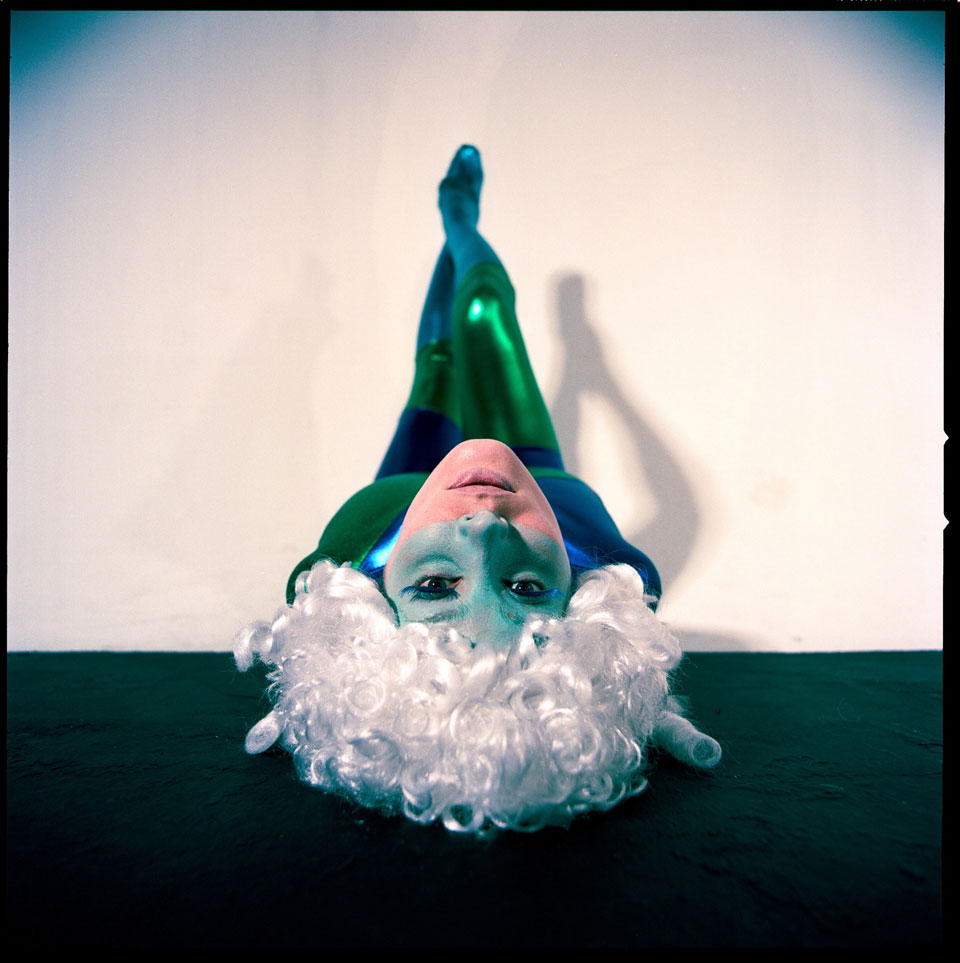

Episode 8: Kaleidoscope
This was the largest production of The Weird Girls Project yet with 27 girls in the cast. The award winning band Agent Fresco approached Kitty and asked her to produce an official music video for their song Eyes of a Cloud Catcher within the Project’s set boundaries of one day filming with the girls being totally unaware of the concept, costumes and location until the day.
The concept Kaleidoscope involved using the girls bodies to produce mirrored layouts and symmetrical graphics with choreographed moves directed for the first time only moments before each shot. It was the first episode to be filmed in a studio.
Link to further images including behind the scenes gallery
Behind the scenes video
- Producer, Concept and Artistic Direction: Kitty Von-Sometime
- Director of Photography: Hrafn Garðason
- 1st Assistant Director and Editor: Atli Viðar Þorsteinsson
- Assistant Producer: Diljá Ámundadóttir
- Lighting: Siggi Bahama and Geir Magnússon
- Second camera: Hrafn Jonsson
- Post Production: Greg Kruk and Sölvi Hrafn Ingimundarson
- Official Photographer: Leó Stefánsson
- Behind the Scenes Photographer: Sara Johanna
- Making of video shot and edited by: Gunnar B. Guðbjörnsson
- Costumes: Kitty Von-Sometime and Judy Wu
- Hair and Make up: Svanhvít Arnadóttir and Karen Wallington
- Make up: Flóra Buenano, Berglind Rögnvaldsdóttir and Helga Sjöfn Kjartansdóttir
- Head Runner: Fríða Einarsdóttir
- Assistant Runners: Daníel Kári and Svana Gunnarsdóttir
- Official Music: Eyes of a cloud catcher by Agent Fresco
- 6th June 2009
